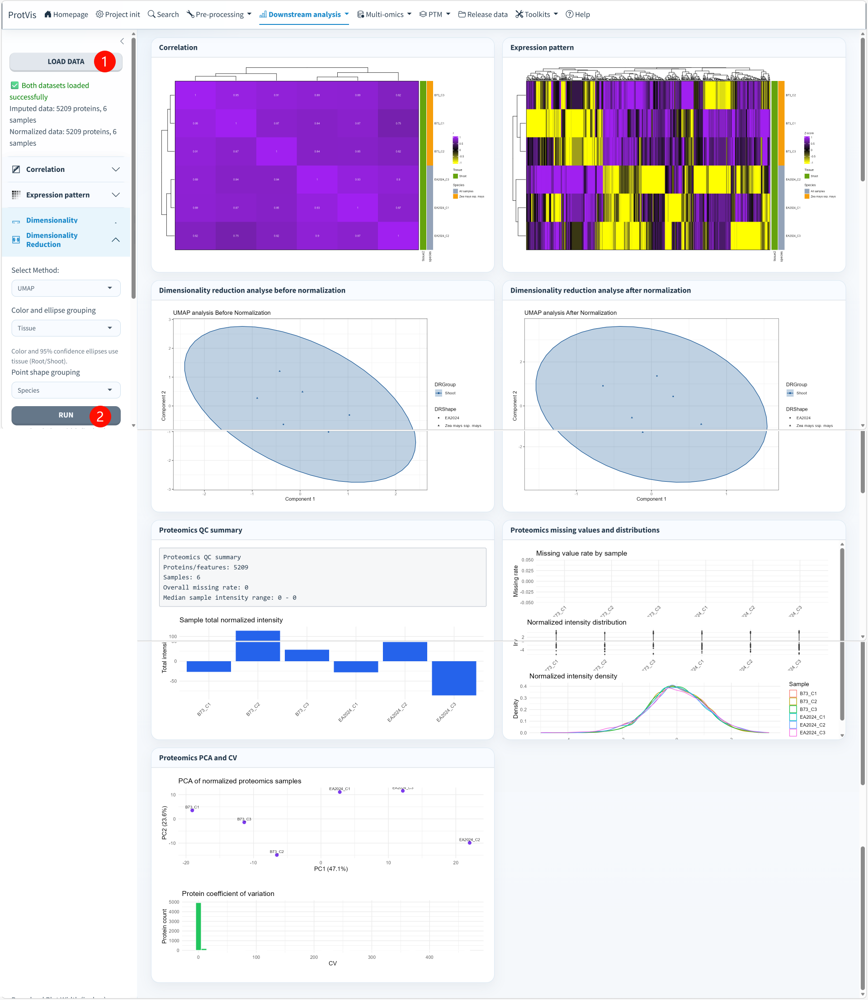

Overview & QC
Purpose
Use Downstream analysis → Overview after preprocessing and before differential abundance analysis. It is the fastest place to check sample relationships, normalization effects, missingness, replicate behavior and broad data quality before formal testing.
The current module loads both the imputed and normalized stages. When stage snapshots are unavailable but a valid ProtVis_dataset is active, ProtVis can derive an overview from the current project object and report that fallback.
Overview interface
The full-resolution screenshot below shows the current Overview/QC page using the six-sample maize example. Values such as 5,209 proteins and 6 samples belong to this example and should not be treated as fixed ProtVis output sizes.

Recommended operating order
1. Load the project data. Open Downstream analysis → Overview and click Load Data. ProtVis loads the imputed and normalized quantitative states needed for side-by-side diagnostics. Confirm the status message before interpreting any plot. In the screenshot, both datasets load successfully and each contains 5,209 proteins across 6 samples.
2. Inspect correlation first. Open Correlation, choose Pearson, Spearman, or Kendall, and inspect whether samples expected to be biologically similar cluster together. Correlation is especially useful for identifying a single failed replicate or a sample whose overall profile is inconsistent with its group.
3. Inspect the expression-pattern heatmap. Use Expression pattern to view broad abundance structure among the most variable proteins. This view is intended for global pattern checking rather than formal differential-abundance inference. If scaling is enabled, interpret relative patterns rather than absolute abundance differences.
4. Compare dimensionality reduction before and after normalization. In Dimensionality Reduction, choose PCA, PCoA, t-SNE, UMAP, or NMDS. The screenshot uses UMAP and displays results before normalization and after normalization side by side. A useful normalization should reduce unwanted technical structure without erasing biologically plausible separation.
5. Set grouping aesthetics from sample metadata. Color and 95% confidence ellipses can use metadata such as group, tissue, species, batch, or condition; point shape can be assigned independently. In the illustrated interface, tissue is used for color/ellipse grouping and species for point shape. Use fields that match the actual experimental design rather than forcing the demo defaults onto another dataset.
6. Finish with the proteomics QC panel. Review the Proteomics QC summary, missing-value rate by sample, sample total normalized intensity, intensity distributions, PCA/CV diagnostics and related summaries. Unexpectedly high missingness, a large sample-level intensity shift, or a single isolated sample should be investigated before DEP analysis.
Correlation
Choose Pearson, Spearman, or Kendall correlation, then configure clustering and whether correlation values/sample names are displayed. Replicates do not need to be identical, but samples from the same biological condition should usually be more similar to one another than to unrelated groups unless the experiment provides a biological reason otherwise.
Expression pattern
The expression-pattern heatmap can focus on the top variable features and optionally scale by protein or sample. This is useful for identifying broad coordinated patterns, outlier samples and dominant abundance blocks. It should not replace a statistical DEP model.
Dimensionality reduction
Available methods are:
- PCA
- PCoA
- t-SNE
- UMAP
- NMDS
ProtVis displays dimensionality reduction before normalization and after normalization so that the effect of preprocessing can be assessed directly. For stochastic methods such as t-SNE or UMAP, interpret neighborhood structure together with the experimental design rather than treating axis values as directly comparable biological quantities.
Proteomics QC
The QC panel summarizes and exports key diagnostics including sample total intensity, sample missing-value rate, intensity boxplots/density, PCA based on variable features, coefficient-of-variation distributions and the normalized matrix.
A visually tighter PCA or UMAP is not proof that preprocessing is correct. If normalization creates separation that conflicts with known biology, removes a strong expected effect, or produces implausible sample distributions, return to the preceding preprocessing stages and check the assumptions.
Handoff to DEP analysis
Once sample relationships, missingness, distributions and group structure are acceptable, continue to DEP analysis. Keep the Overview/QC outputs as part of the analysis record because they provide the context needed to judge the reliability of downstream differential results.